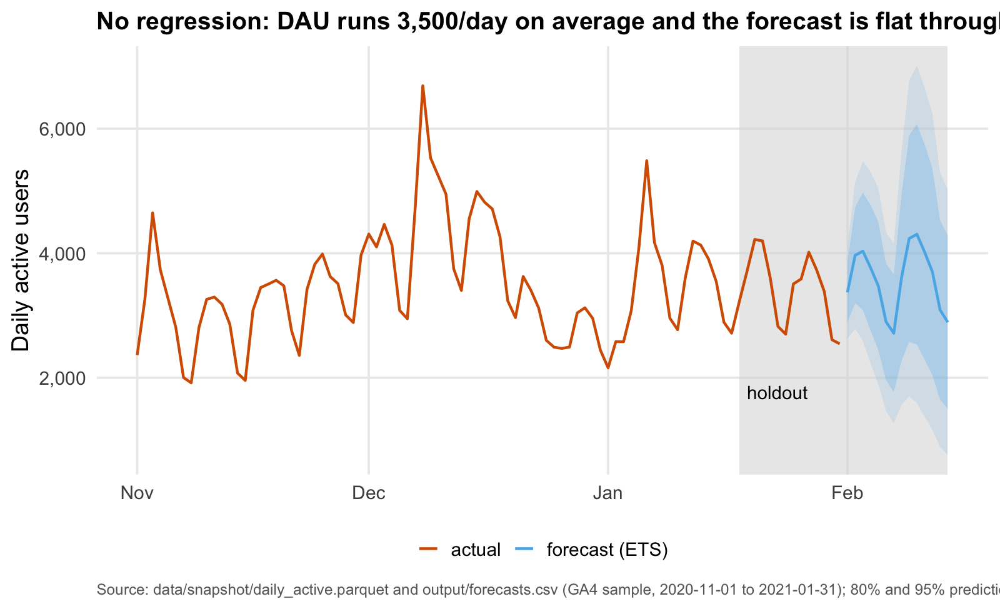
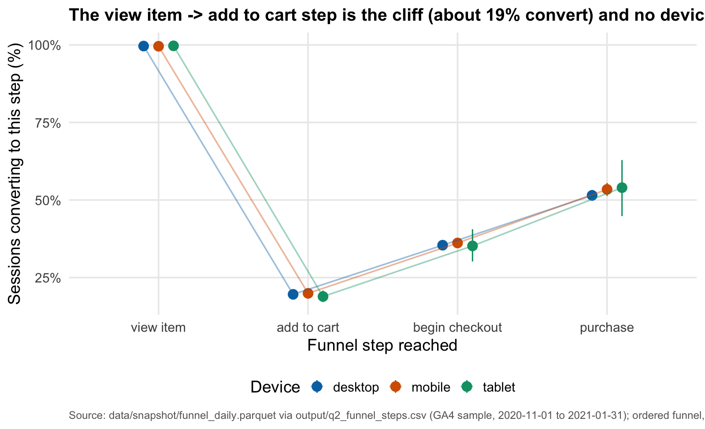
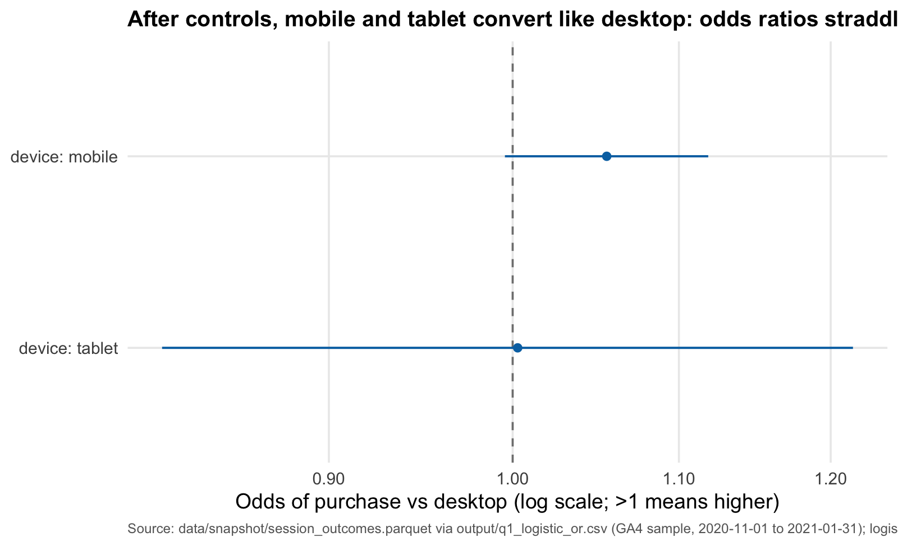
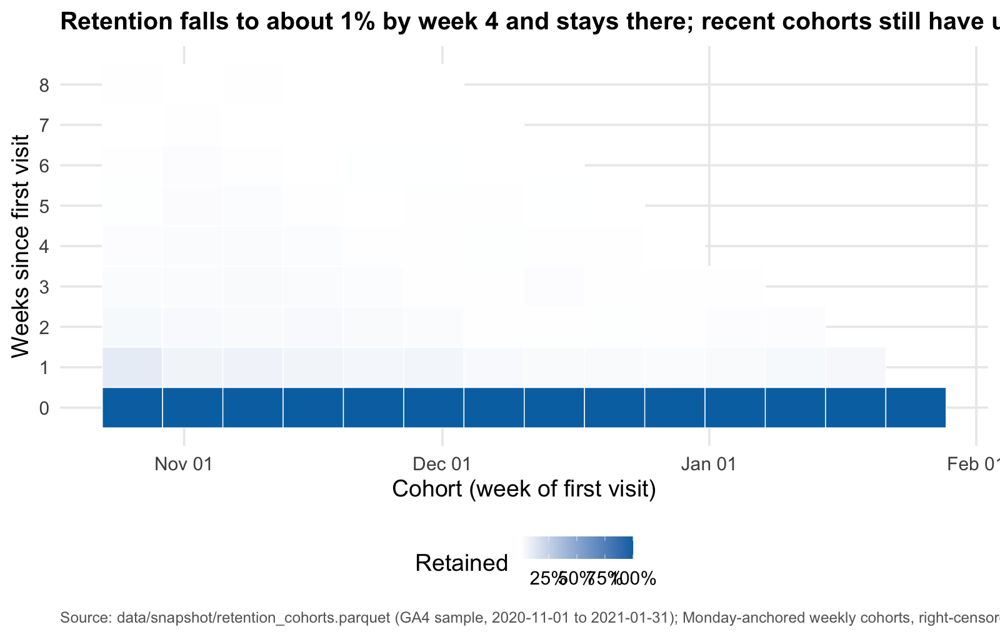
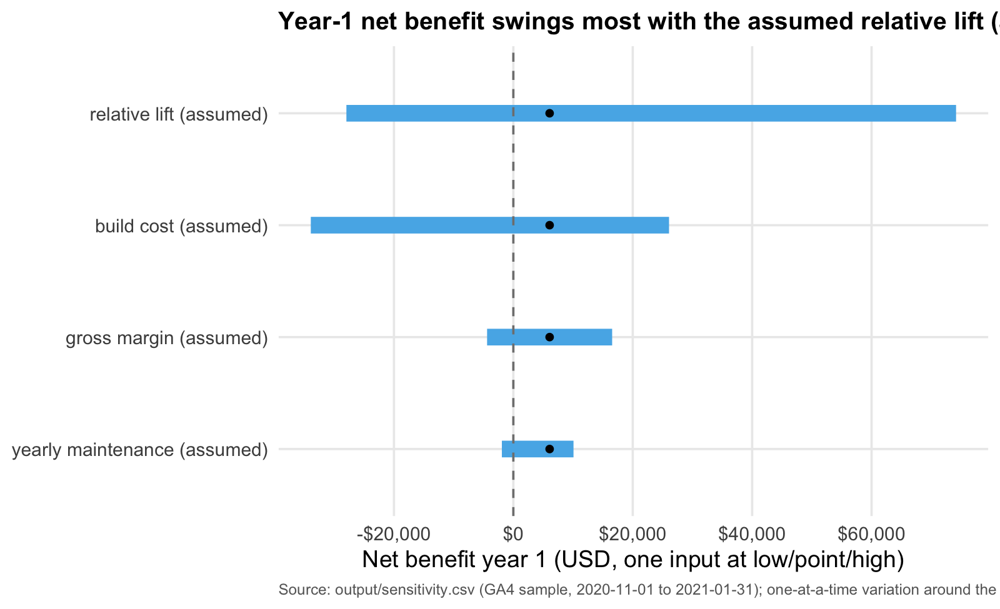

| Item | Value |
|---|---|
| View→cart step conversion today | 19.7% |
| Sessions lost at the step (92 days) | 61,853 |
| Addressable sessions per year | 305,568 |
| Cart→purchase conversion | 18.7% |
| Assumed relative lift on the step | 10.0% |
| Average order value (pre-holiday) | $93.15 |
| Incremental purchases per year | 1,124 |
| Incremental revenue per year | $104,733 |
| Incremental gross profit per year | $68,076.17 |
| Build cost (one-time) | $50,000 |
| Yearly maintenance | $12,000 |
| Net benefit, year 1 | $6,076.17 |
| ROI, year 1 | 9.8% |
| Payback | 10.7 months |
| Break-even lift | 9.1% |
Fix the view→cart step
Decision memo — Google Merchandise Store (GA4 sample)
Recommendation
Don’t build it yet. At the assumed 10.0% lift, fixing the view→cart step earns only $6,076.17 in year one — barely above break-even (the minimum lift that pays for itself is 9.1%). Run a cheap A/B experiment to prove the lift first; build only if it clears 9.1%.
Why
- The step is the biggest leak: view→cart drops 61,853 sessions in 92 days — the single largest absolute funnel loss, at a 19.7% conversion.
- But the prize is small: even a 10.0% lift yields only 1,124 incremental purchases (~$104,733 revenue, $68,076.17 gross profit) per year against a $50,000 build plus $12,000/year upkeep.
- The answer hinges on one assumption: the assumed lift swings year-1 net benefit by ~102k USD in sensitivity, while build cost swings it by only 60k — so an experiment that measures the lift is the highest-value next step.
What the data shows




Cost and return
The project breaks even at a 9.1% lift on the step. Below that, net benefit is negative.

What would change my mind
- A measured lift (from an A/B test) at or above 9.1% — that converts this from a bet on an assumption into a positive-ROI build.
- Evidence that the cart→purchase downstream (18.7% today) improves with a better cart experience, multiplying the value of the fix.
- The device parity result changing: the funnel is uniform across devices now; a device-specific cliff would change the target and the sizing.
- A bigger lift upside — if the assumed high case (20.0%) is credible, the swing analysis shows the payoff re-rates the whole decision.
Method + limitations
- Observational data: the GA4 public sample is one ecommerce store over 92 days; effects are correlations, not causal evidence. All figures come from
output/CSVs and the committed snapshot. - Obfuscated sample: Google replaces some values with placeholders (e.g.
<Other>); zero-revenue purchases are obfuscated NULLs and were excluded from AOV, not dropped silently. - Holiday window: Black Friday through Christmas sits inside the sample; sizing uses the pre-holiday AOV as business-as-usual and annualizes the 92-day funnel.
- Assumed lift: the 10.0% point lift is an assumption, not a measured effect; the tornado chart and break-even lift make that explicit.